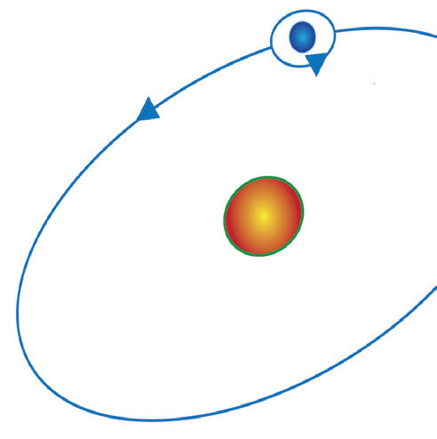

ElectronOrbitSpinNucleusFigure 3.2: Orbit of a spinning electron around the nucleus of an atom
In many atoms, these magnetic effects cancel each other, while in other atoms they do not cancel completely.
Magnetic and non-magnetic materials
When a magnet is brought near different objects, some will be attracted or repelled, and others will not.
Objects that are attracted are said to possess induced magnetism.
The process by which a material becomes a magnet due to its closeness or contact with a magnet is called induction.
The induced magnetism can be temporary or permanent upon the removal of the magnet in contact.
The nature of the material being magnetised determines how long the induced magnetism lasts.
For example, iron exhibits temporary magnetism while materials like steel tend to retain their magnetism for a long time.
Materials which are not affected by a magnet are called non-magnetic materials.

Aim: To classify magnetic and non-magnetic materials
Materials: bar magnet, knife, blade, copper rod, paper, glass rod, iron nail, water, wooden toothpick, chalk, aluminium foil, lead (graphite) pencil, some sand
Procedure
- 1. Place each of the materials close to a bar magnet.
- 2. Note down your observations.
Questions
(a) Which materials were attracted to the magnet, and what do they have in common?
(b) Why do you think some metals are attracted to the magnet while others are not?
(c) Based on your observations, how can you classify magnetic and non-magnetic materials?
Metallic materials like iron, nickel and cobalt become magnetised when exposed to the influence of a magnet.
They are thus magnetic.
Magnetic materials are those which can be magnetised by even weak magnets.
Materials that are attracted to a magnet and can be strongly magnetised are called ferromagnetic materials.
Ferromagnetic materials contain either iron, nickel or cobalt.
These materials are grouped as magnetically hard or soft depending on how well they retain their magnetism when magnetised.
Magnetically hard materials such as steel do not readily lose their magnetism, though they are difficult to magnetise.
They are used to make permanent magnets.
On the other hand, soft magnetic materials like iron can be easily magnetised, but they tend to lose their magnetism easily.
As a result, they are used in the cores